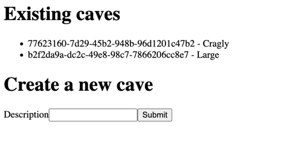

This is needed for a form submission to work now with the site-defaults
middleware set.
The basic concept behind an anti-forgery field is to make sure that if someone gives you a form submit request, they were not tricked into doing that by a different site. There is more to it, but its not too relevant at the moment.
(ns example.cave.routes
(:require [hiccup2.core :as hiccup]
[example.middleware :as middleware]
[ring.util.anti-forgery :as anti-forgery]))
(defn cave-create-handler
[_system request]
(println request)
(println (:params request))
(let [{:keys [description]} (:params request)]
{:status 200
:headers {"Content-Type" "text/html"}
:body (str
(hiccup/html
[:html
[:body
[:h1 "TODO"]]]))}))
(defn cave-handler
[_system _request]
{:status 200
:headers {"Content-Type" "text/html"}
:body (str
(hiccup/html
[:html
[:body
[:h1 "Create a new cave"]
[:form {:method "post"
:action "/cave/create"}
(hiccup/raw (anti-forgery/anti-forgery-field))
[:label {:for "description"} "Description"]
[:input {:name "description" :type "text"}]
[:input {:type "submit"}]]]]))})
To do this you need to pull the db out of the system
and then use next.jdbc to make the insert
Also, instead of returning HTML directly, redirect back to /cave.
(ns example.cave.routes
(:require [example.middleware :as middleware]
[example.system :as-alias system]
[hiccup2.core :as hiccup]
[next.jdbc :as jdbc]
[ring.util.anti-forgery :as anti-forgery]
[ring.util.response :as response]))
(defn cave-create-handler
[{::system/keys [db]} request]
(let [{:keys [description]} (:params request)]
(jdbc/execute!
db
["INSERT INTO prehistoric.cave(description) VALUES (?)"
description])
(response/redirect "/cave"))))
...Now if we make a query we can show all the existing cave rows. This way you will see the names of any existing caves, submit a new one, and immediately see it in the list when you hit submit.
(defn cave-handler
[{::system/keys [db]} _request]
(let [caves (jdbc/execute!
db
["SELECT id, description FROM prehistoric.cave"])]
{:status 200
:headers {"Content-Type" "text/html"}
:body (str
(hiccup/html
[:html
[:body
[:h1 "Existing caves"]
[:ul
(for [cave caves]
[:li (:cave/id cave) " - " (:cave/description cave)])]
[:h1 "Create a new cave"]
[:form {:method "post"
:action "/cave/create"}
(hiccup/raw (anti-forgery/anti-forgery-field))
[:label {:for "description"} "Description"]
[:input {:name "description" :type "text"}]
[:input {:type "submit"}]]]]))}))
If all goes well, you should end up with something like the following screenshot.
